I walked through every major screen in ForestGEO the way a researcher actually uses it — signing in,
choosing a site and census, browsing and editing measurements, uploading files, and checking results. This
page describes what I found, in plain language, and — for the items already fixed — shows what changed and
why it should feel better to use.
10
Fixed & live
16
Still on the list
6
Already working well
What "fixed" means here: every item marked Fixed below has
already been changed, tested, and merged into the app you use. The screenshots under each one were taken
directly from the running app, not mocked up.
The items still on the list aren't forgotten — they're just not done yet. They're included here so you
know I've heard about them and can see the plain-language version of the concern.
Signing in & getting oriented
The first ten minutes: sign in, then pick a site, a plot, and a census. The three-step
picker itself is the right idea — the problems were in the details around it.
F1Fixed
The dashboard said "no sites available" — while the menu right next to it listed nine
If you signed in as an administrator with access to every site, the Dashboard's welcome screen told you
"You don't have access to any sites yet. Please contact an administrator" — while the site-picker in
the sidebar, on that exact same screen, listed all nine sites you could choose from. The two parts of the
screen were checking your access two different ways, and only one of them was right.
✓ What I changed
The Dashboard's site list and the sidebar's site list now come from the same place. An administrator
who can see every site now sees every site, everywhere on the page.
Why it's better: being told "you have no access" to a system you're
actually meant to manage is the worst possible first impression — it makes people doubt the tool before
they've even started.
Before
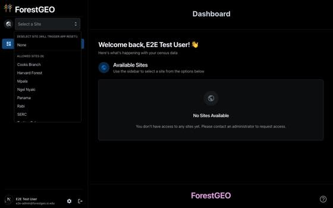
Nine sites in the dropdown; "No Sites Available" on the same screen.After
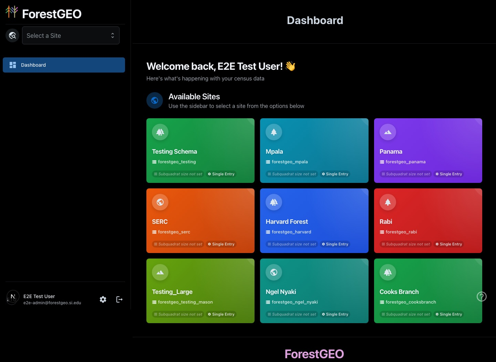
Same login, same access level — all nine sites now show up correctly.
F2Fixed
A delete button sat right inside the picker you use dozens of times a day
Every census — in both the quick picker in the sidebar and the option list you open to switch between
measurement periods — had a small trash-can icon sitting right where you'd naturally click. That's a
destructive action placed inside the control people use most often, just to get their work done. The label
for clearing your site selection also read "DESELECT SITE (WILL TRIGGER APP RESET!)" — alarming
wording for what is normally a routine, harmless action.
✓ What I changed
You can no longer delete a census from the quick picker. Deleting now happens from the Census Overview
page, next to that census's full details, and only for the most recent census — so older, already-published
data can't be deleted by mistake. The "DESELECT SITE" warning is now plain "Clear selection."
Why it's better: a destructive action should live somewhere deliberate, not
somewhere you pass through on your way to normal work — and everyday actions shouldn't sound like warnings.
Before
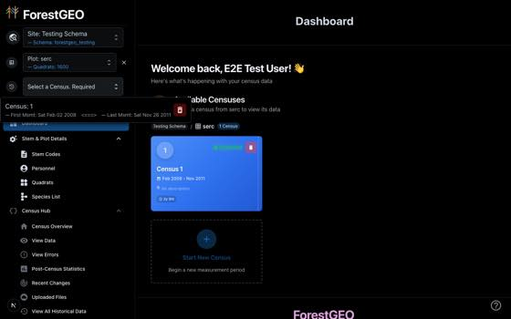
A red delete button inside the everyday census picker.After
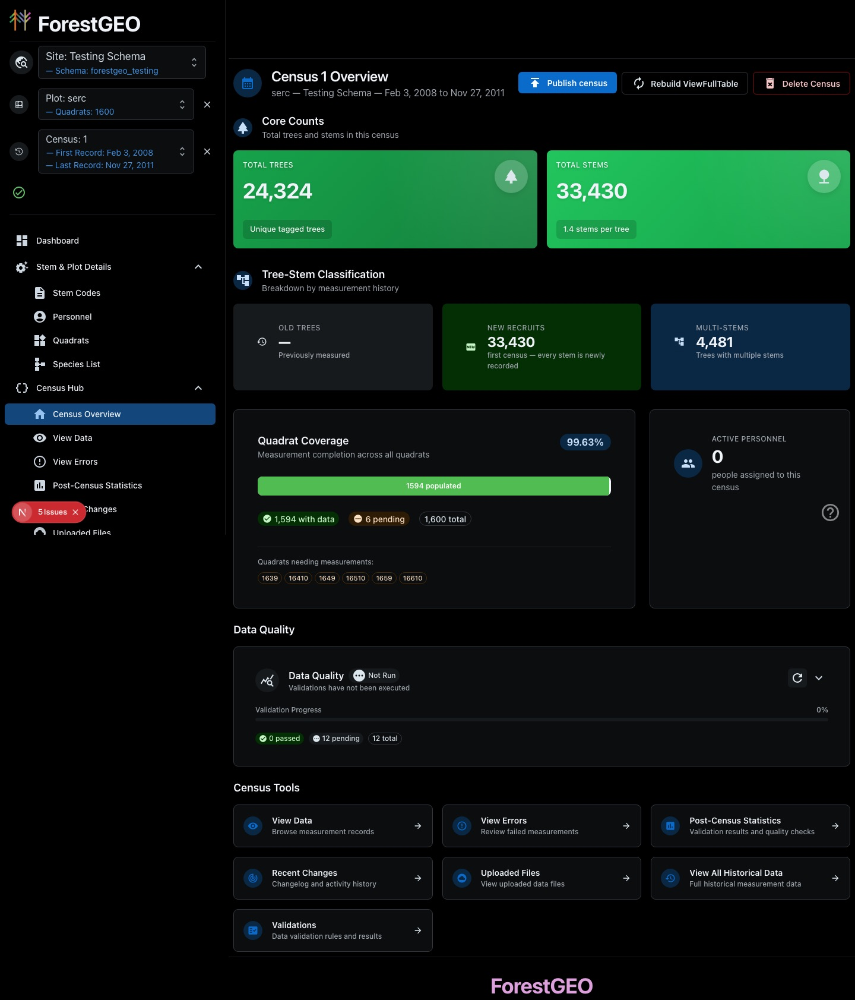
"Delete Census" now lives on the Census Overview page instead — a deliberate destination, not a
drive-by click.
F3Fixed
Odd formatting leftovers in the pickers
Census dates showed a stray symbol: First Msmt: Sat Feb 02 2008<===> — Last Msmt: …
Plot details ran words together: serc— Quadrats: 1600
An empty "Other Sites (0)" group appeared for administrators, with nothing inside it.
The same date appeared written three different ways across three different pages.
✓ What I changed
Dates now display the same, plain way everywhere in the app (for example, Feb 3, 2008), the
stray symbol and missing spaces are gone, and the empty group no longer shows up.
Why it's better: small inconsistencies like these are exactly what make a
data tool feel untrustworthy, even when the underlying numbers are correct.
Before
separator and glued-together text">
The raw "<===>" symbol and glued-together plot text.After
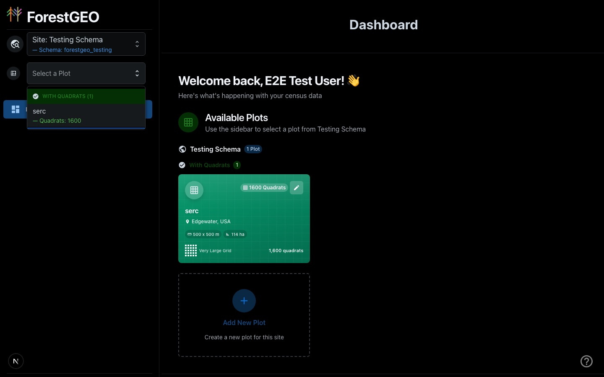
Clean spacing, no stray symbols — same information, easier to read.
F4On the list
The sign-in button is easy to miss
The sign-in page is a full-screen forest photo with just a small, dark strip in the bottom-left corner to
actually click. On a large monitor, a first-time visitor can spend a moment looking for what to click.
F5On the list
The rest of the menu appears silently once you've finished picking
Until you've chosen a site, a plot, and a census, the sidebar shows only "Dashboard" — the rest of
the menu isn't there yet, and nothing tells you it's coming once you finish choosing.
Losing your place
This was the single biggest source of frustration in the app. It wasn't any one screen —
it was what happened between screens.
F7Fixed
Refreshing the page — or opening a direct link — wiped your site, plot, and census selection
Hitting refresh, or opening a bookmarked or shared link straight to a specific page, threw away your
current site/plot/census selection and sent you back to the Dashboard to start over. In practice that meant:
Refreshing anywhere in the app meant re-selecting site → plot → census from scratch, every time.
A link to a specific page couldn't be bookmarked, shared with a colleague, or opened in a new tab —
it always landed back on the Dashboard.
Even the built-in "report a bug" form captured "No site selected. No plot selected. No census
selected." right after you'd navigated somewhere — so bug reports lost the context that mattered most.
✓ What I changed
Your selection is now correctly restored the moment the page loads — whether that's a manual refresh, a
bookmark, or a link someone sent you. I also confirmed this works from a cold page load on a specific
sub-page, not just the Dashboard.
Why it's better: you can now refresh mid-task without fear, bookmark a
specific census's error list, and send a colleague a direct link that actually opens where you meant it to.
After
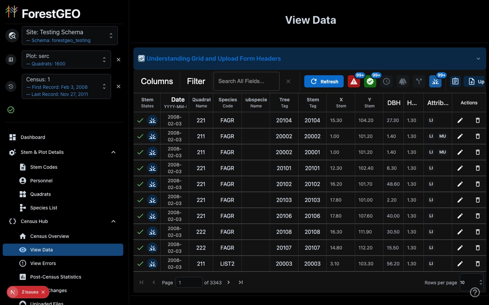
A hard refresh on the "View Data" page — the site, plot, and census are still selected, and
you're still on the same page. (There was no useful "before" screenshot to show here — the old
behavior was simply landing back on the Dashboard with everything cleared.)
F8Fixed
Sidebar menu items didn't behave like normal web links
The items in the sidebar menu looked like links but acted like buttons — so the usual tricks (middle-click
or Cmd/Ctrl-click to open in a new tab, right-click to copy the link) didn't work. Combined with the reload
problem above, it meant you couldn't keep the error list open in one tab and the data grid open in another.
✓ What I changed
Sidebar menu items are now real links. Middle-click, Cmd/Ctrl-click, and right-click-to-copy all work as
you'd expect from any other website.
Why it's better: this is a small, mostly invisible change under the hood —
the menu looks the same — but it unblocks working across multiple tabs, which many researchers rely on for
cross-checking data.
Trusting the numbers
Researchers calibrate how much they trust a data tool very quickly. Three pages were
telling three different stories about the same census, which is exactly the kind of thing that erodes trust fast.
F9 · F11Fixed
One page said 23,322 unresolved errors; the dedicated error page said zero
Opening the data grid greeted you with a warning: "23,322 row(s) with unresolved errors detected."
Clicking straight through to the "View Errors" page — meant to be the definitive place to review exactly
those errors — showed every counter at zero. A third summary on the same census said data quality checks
"have not been run yet." So, for the same census, at the same moment: 23,322 errors, 0 errors, and "nothing's
been checked yet" — three contradictory answers to the same question.
✓ What I changed
The data grid, its warning message, and the error page now all agree, because they now use one shared,
consistent definition of "not yet checked," "failed a check," and "valid" — instead of each page counting
things its own way. If a census genuinely hasn't been checked yet, the message now says exactly that,
instead of implying something is broken.
Why it's better: when the numbers agree across the app, you can act on
them with confidence instead of wondering which page to believe.
Before
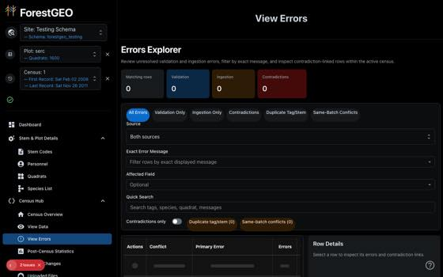
Same census, moments after the grid's warning: the error page said zero, everywhere.After
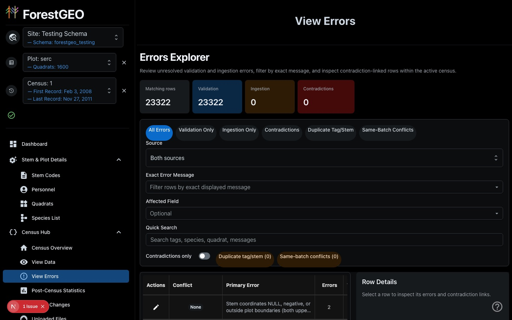
Same census, now: the error page's count (23,322) matches what the data grid reported —
one number, one story.
F10Fixed
The census summary contradicted itself in the same glance
The Census Overview page showed "1.4 stems per tree" in one box, and "Multi-stems: 0" in the box right
next to it — numbers that can't both be true (if stems average more than one per tree, some trees must have
more than one stem). The same screen also confidently reported "0 old trees" for a first census, where that
number genuinely can't be measured yet, instead of saying so.
✓ What I changed
The multi-stem count is now calculated the same way as the rest of the statistics on the page, so it
agrees with them — this particular census actually has 4,481 trees with more than one stem. And when a
number genuinely can't be computed yet (like "old trees" on a brand-new census), the page now shows a
dash with a short explanation instead of a confident-looking zero.
Why it's better: a forest ecologist will notice "1.4 stems/tree" next to
"0 multi-stem trees" within seconds — and once one number looks wrong, every other number on the page
becomes suspect too.
Before
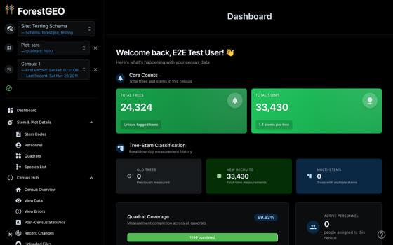
"1.4 stems per tree" and "Multi-stems: 0," a few hundred pixels apart.AfterMulti-Stems now reads 4,481, consistent with 1.4 stems/tree; Old Trees shows "—" with a
plain explanation instead of a misleading 0.
Working in the data grids
This is where researchers spend most of their time. The grids are functional — filtering,
editing, and exporting all work — but density and labeling problems slowed down every visit.
F12Fixed
The full historical data table opened unreadable
The archive table — more than fifty columns of historical measurement data — opened with almost every
column header chopped down to one or two letters (M…, Pl…, D…) and
values cut off mid-number. You had to manually widen a dozen columns, every single visit, before you could
tell what you were looking at.
✓ What I changed
Columns now open at sensible widths appropriate to what they hold (dates get more room than a short
code, for instance), and the table now remembers how you've resized or hidden columns the next time you
come back — you only have to adjust it once.
Why it's better: this table exists specifically so researchers can review
historical data; a table you can't read on arrival defeats its own purpose.
Before
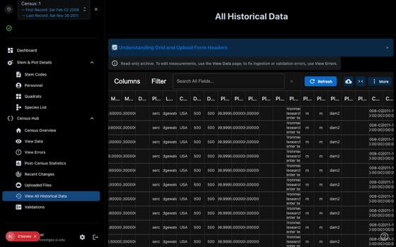
Headers reduced to initials; values clipped mid-number.After
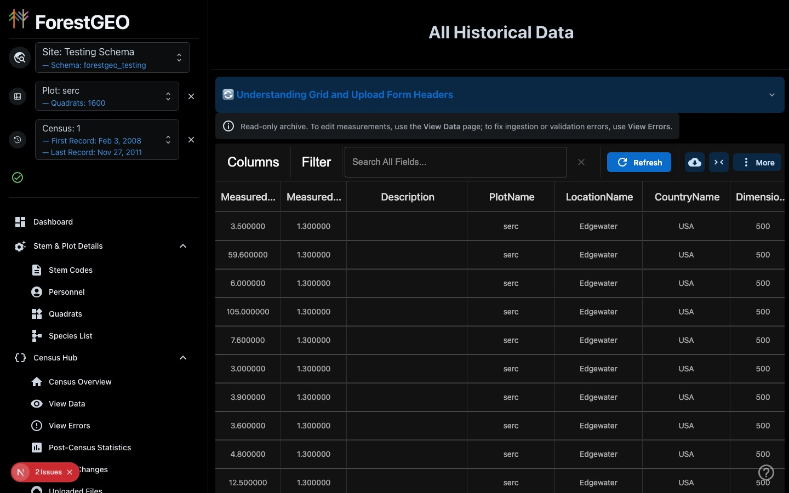
Full, readable headers and un-clipped values on first load.
F13On the list
Six unlabeled icons control what the data grid shows you
The filter row above the data grid uses six icons with no visible labels — a red triangle, a green
shield, a clock, and so on — to control which rows are shown. Their meaning is only available if you hover
over each one, and the small count badges cap out at "99+," so you can't actually see how many rows are
affected.
F14On the list
The warning message can cover the page controls, and pages default to just 10 rows
The unresolved-errors warning can render directly on top of the page-number controls at the bottom of the
grid, hiding them until you dismiss it. The grid also defaults to showing only 10 rows per page, which turns
a 33,000-row census into more than 3,000 pages to click through.
F15On the list
Adding one record by hand hides behind an unlabeled icon
You can add a single measurement without a full CSV upload — the form for it is well built — but the
button that opens it is an unlabeled clipboard icon sitting next to the clearly labeled "Upload" button.
F16On the list
A large explainer banner sits permanently at the top of every data page
"Understanding Grid and Upload Form Headers" is genuinely useful the first time you see it — but it's
pinned above all seven data-grid pages permanently, taking up space every visit after that.
F17On the list
Every row has a delete button whose tooltip says "cannot be undone"
A confirmation step does exist before a row is actually deleted, but the tooltip on the delete button
itself reads as a warning about irreversibility rather than a reassurance of safety.
History, files & behind-the-scenes details
Pages that answer "what happened to my data?" — plus one real problem where a page showed
data it shouldn't have.
F19Fixed
The Uploaded Files page was showing other sites' files
Under one site's plot and census, the Uploaded Files page listed files that had clearly been uploaded by
a different site entirely — including files named after a different forest plot altogether. This
happened because uploaded files were being filed away by plot number and census number only, with nothing
recording which site they belonged to — and two different sites can both have a "plot 1, census 1." That
meant researchers could see (and in principle download or delete) files that weren't theirs, which is both
confusing and a real data-privacy concern.
✓ What I changed
Every site's uploaded files are now filed away in their own separate, clearly labeled location, so this
mix-up can no longer happen for anything uploaded going forward. A companion tool — used by administrators
behind the scenes, not something you'll interact with directly — can move older files that were uploaded
before this fix into the correct, site-specific location; that cleanup step reviews and confirms the
mapping for each site before anything is moved.
Why it's better: your Uploaded Files page should show your files. This
also closes a real gap where one site's data could be visible to people who work on a different site.
Before
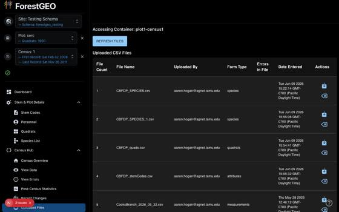
Files from a different site and plot, listed under this site's Uploaded Files page.After
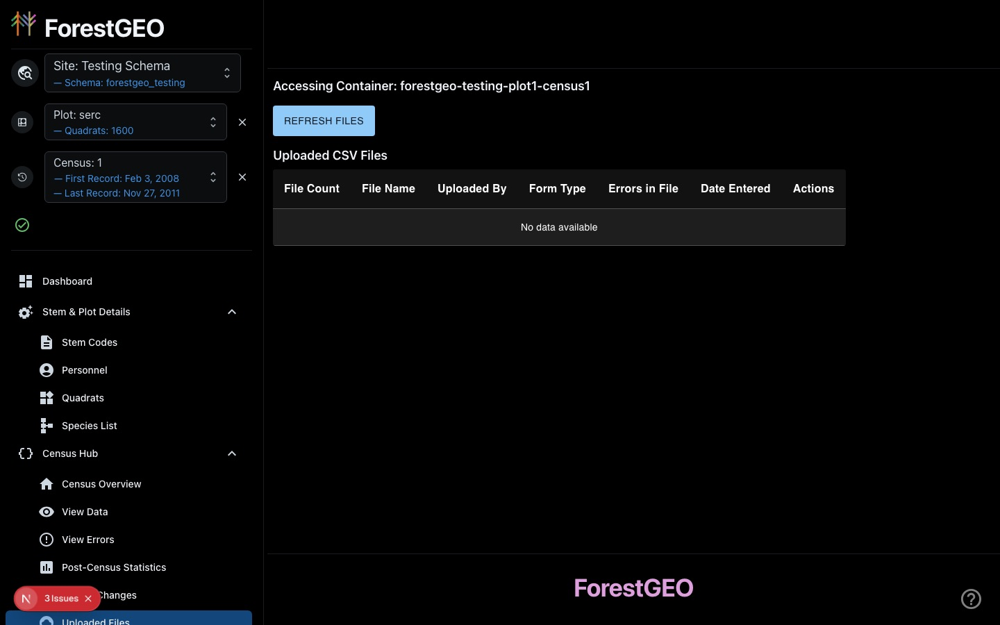
The file list is now scoped to this site only — the storage location itself now identifies
which site it belongs to.
F20On the list
Uploaded Files reads like a systems log, not a researcher's file list
Beyond the cross-site mix-up above, dates on this page spill across three lines
(Tue Jun 09 2026 15:22:14 GMT-0700 (Pacific Daylight Time)), the "Errors in File" column shows
up blank instead of a clear 0 or "—", and the download/delete actions are unlabeled icons — the delete icon
in particular looks like a backspace key.
F21On the list
The change history reads like a technical log
Entries in Recent Changes read like raw database output — field-by-field differences and a person's full
internal job title in brackets — instead of a plain sentence like "Mason uploaded 33,430 measurement rows."
F22On the list
The statistics and validation pages lead with database queries
Post-Census Statistics and the Validations Hub both show the underlying database query, in a wide
column, before any plain-language name or description of what the check actually does.
F23On the list
A clean census looks like a broken page
When a census genuinely has zero unresolved errors, the error page shows a grey loading skeleton and
"Page of 0" — which reads as something failing to load, not as good news.
The admin area
Reachable only if you already know the web address, and it swaps the whole navigation
model once you're inside.
F24On the list
Getting into — and back out of — the admin area is confusing
There's no menu item anywhere in the normal app that links to the admin area; you have to know the exact
web address. Once inside, the sidebar changes completely, and the only way to leave is to pick a site again.
F25On the list
Site Management shows "0 sites" to an administrator who manages nine
The same administrator who sees nine sites everywhere else in the app sees "0 of 0" on the Site
Management page, along with one unexplained, half-filled blank row.
F26On the list
User Management is always in "edit everything" mode
Every cell is editable all the time, Save and Discard are always active whether or not anything actually
changed, there's no way to tell which rows you've edited, and there's no visible way to add a new user.
Phones, tablets & general robustness
Field crews are tablet and phone users by definition, so this matters more than it might
for an office-only tool.
F28On the list
On a phone screen, the app is only a navigation menu
At phone width, the sidebar takes over the entire screen and the actual page content isn't reachable;
the ForestGEO logo also gets cut off behind the menu button.
F29On the list
The "?" help button opens a bug report, not help
The floating "?" button — the universal symbol for help — opens the feedback/bug-report form. There's no
link anywhere in the app to the actual user documentation, even though it exists.
What already works well
Just as important as the problems: these are the things I'm protecting, not changing.
F30Keep
Six things worth calling out
The upload-mode choice — "Clean Re-Upload (Destructive)" vs. "Revisions Upload
(Recommended)," explained in plain language, is an excellent way to communicate risk before you commit to
an action.
Confirmation prompts on the biggest actions — publishing a census, rebuilding the
full historical table, and deleting a census all ask you to confirm first.
The read-only notice on the historical data page — "To edit measurements, use the
View Data page; to fix errors, use View Errors" tells you exactly where to go next.
The guided site setup wizard — a clear, four-step process with helpful messages if you
leave something blank.
Icon buttons generally have real, descriptive labels underneath them, even where
they're not visible as tooltips yet.
The overall site → plot → census way of navigating — the underlying mental model is
right; everything in this report is about smoothing the experience around it, not replacing it.
Other work that landed this month
The walkthrough above is a specific, browser-driven audit — but it's not the only thing
that's shipped recently. Between June 10 and today, five other pieces of work landed in the version of
ForestGEO everyone uses. None of these came out of the walkthrough; they're included here so this page gives
an honest picture of everything that's changed lately, not just the walkthrough findings. (The codebase itself
was also reorganized into a clearer folder structure during this window — no behavior changed, so it isn't
written up below, but it's part of why recent fixes have been able to move faster.)
PR #338Shipped
Merged 2026-06-17
CSV uploads with mismatched or duplicate columns are now caught instead of silently accepted
If a row in an uploaded CSV had too many or too few columns, or if two columns shared the same header
name, the app could sometimes accept the row anyway — occasionally filing data under the wrong column, or
inventing a hidden extra one. A measurement value that couldn't be fully read (like a DBH with a stray
letter in it) could also get silently trimmed down to just the numeric part instead of being flagged.
✓ What I changed
Rows like these are now rejected clearly, with an explanation, instead of being guessed at and let
through. If any of your uploaded columns get ignored because the app doesn't recognize them, it now tells
you that too, instead of quietly dropping them.
Why it's better: a loud rejection at upload time is far easier to fix than
a wrong number discovered months later in an analysis.
PR #340Shipped
Merged 2026-07-02
The app can now remember a stem's official Smithsonian-published ID
Behind the scenes, ForestGEO can now capture and store the official ID number the Smithsonian publishes
for a stem — separate from the app's own internal tracking number — including when that data arrives through
the ArcGIS-based mapping workflow. It's carried forward automatically from one census to the next, and if an
uploaded ID can't be understood, the app now raises a clear warning instead of silently discarding it.
✓ What I changed
This is groundwork, not a new screen — there's no new column visible in the app yet. It exists so that
this identifier is captured and preserved now, ahead of future work to match ForestGEO's records against
the Smithsonian's own published data.
Why it's better: capturing this now means nothing has to be reconstructed
or re-matched later once that connection is built.
PR #343 · PR #345Shipped
Merged 2026-07-08
The same site-privacy fix behind F19 was extended to the rest of the app
Earlier in this document, F19 described the Uploaded Files page showing files that belonged to a
different site, because that one page never actually checked which site a request was allowed to touch. It
turned out more than thirty other behind-the-scenes actions across the app had the same class of gap — a
signed-in user could, in principle, reach an action meant for a site they don't belong to.
✓ What I changed
Every one of those has now been closed. Every site-specific action in the app checks that you actually
belong to that site before it touches any data — and each one now has an automated test proving a request
for a site you don't belong to gets rejected before any data is even looked at, not just after. A few
related stability fixes landed alongside this: extra safety headers on every response, and a correction to
how the app tracks database connections and locks so it stays stable when a lot of people are working at
once.
Why it's better: this closes the same category of problem everywhere,
instead of one page at a time. There's no visible change on screen — this is entirely behind-the-scenes
plumbing — but it's one of the most important fixes in this whole document.
PR #344Shipped
Merged 2026-07-08
The Species List page works again on every site
On some sites, opening "Species List" showed an "error fetching data" message and an empty grid — not
because the species data was actually missing, but because a technical piece the page depends on had never
been created for that site in the first place. Sites that were set up through the app's own site-creation
wizard, rather than configured by hand, were the ones missing it.
✓ What I changed
That missing piece has now been created for every existing site, and every newly created site gets it
automatically going forward. The groundwork for a more detailed, stem-level version of this same view was
also added, for a future page.
Why it's better: a core reference page — the list of species recorded at a
site — should never depend on how that site happened to be set up.
After
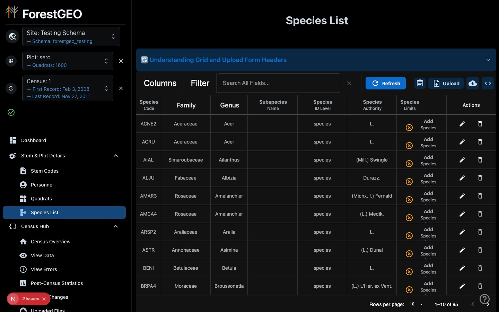
Species List loading correctly, with all 95 species for this site.
PR #346Shipped
Merged 2026-07-09
Two upload bugs fixed: doubled quadrat counts, and dropped species names
Two unrelated CSV-upload problems, fixed together:
Doubled quadrats. When a site is first set up without a real quadrat list on hand, an
administrator can choose to auto-generate a placeholder grid to start from. When that site's real quadrat
list was later uploaded under different names, the app added the real quadrats alongside the
placeholders instead of replacing them — one site ended up with roughly twice as many quadrats as it
should have (1,052 instead of 527). That site's data has already been corrected.
Dropped species names. Uploading a species/taxonomy CSV with a column literally named
"species" had its contents silently redirected into the wrong field (the species code), because of a
column-name shortcut list that was meant only for measurement uploads. The actual species name was lost
as a result.
✓ What I changed
Setting up a new site now offers a third option — "add the quadrat list later" — so no placeholder grid
gets created at all if you don't have real data on hand yet. Separately, the app now refuses a quadrat
upload that looks like it doesn't overlap at all with what's already there, instead of blindly adding to
it, and points you to the right upload mode instead. The species-name shortcut is now scoped only to
measurement uploads, so a taxonomy upload keeps the species name intact.
Why it's better: both bugs shared the same root cause — an upload mode
quietly guessing what to do with data it didn't fully recognize. Fixing that class of guessing, not just
the one site it was caught on, is what should stop this from resurfacing elsewhere.
About this page
This is a plain-language rewrite of the original engineering audit conducted on 2026-07-06, with progress
notes added as fixes have shipped. Every screenshot under a "Fixed" or "Shipped" item was taken directly
from the running application signed in as the same kind of user described in the original audit, using the
same site, plot, and census (Testing Schema / serc / census 1). Nothing here has been staged or simulated.
"Other work that landed this month" covers everything else merged between 2026-06-10 and today that wasn't
part of the walkthrough audit itself.
Have a question about any of the items still "on the list," or something that doesn't match what you're
seeing in the app? Use the "Report an issue" option from the "?" menu in the app, or reach out to the
engineering team directly.